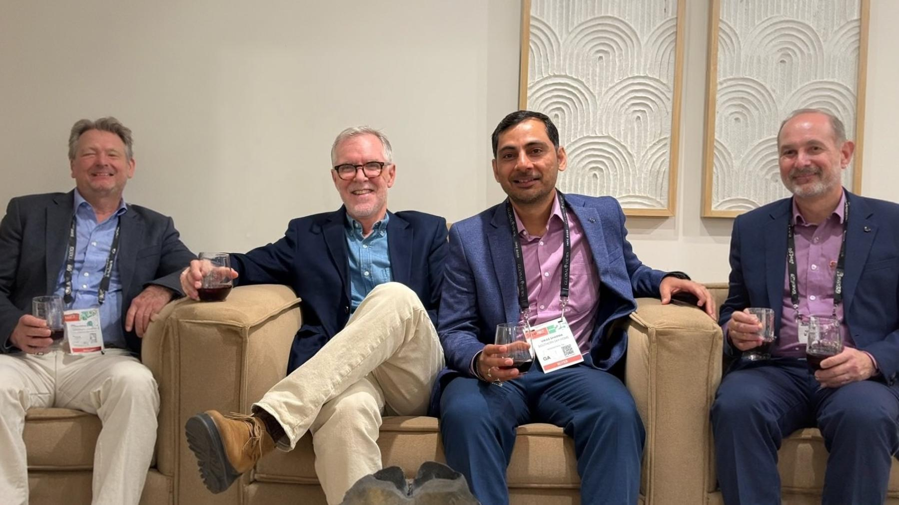

About us
A sourcing partner that speaks both factory and marketplace.
SAVI Global Sourcing was started to fill the gap between traditional furniture manufacturing and modern digital shelves. We understand production constraints, logistics realities and marketplace rules – and connect all three.
Our team blends experience from furniture sourcing, marketplace operations and hands-on listing creation, so your catalog is not just “uploaded” – it’s ready to sell.
Category-focused
furniture, lighting & décor only
furniture, lighting & décor only
Service-based
no software to learn or manage
no software to learn or manage

How We Work
A simple, structured engagement model
- 1. Assess – We review your catalog, operations, and channel fit.
- 2. Launch – We set up stores, listings, pricing, and SLAs.
- 3. Operate – We run day-to-day inventory, orders, returns, and support.
- 4. Grow – We optimize content, promotions, and ads based on performance data.
What Sets Us Apart
Why brands choose SAVI
- Category depth: Purpose-built for furniture and home accessories nuances (large parcel, attributes, compliance, customer expectations).
- Operational rigor: Clear SLAs, exception playbooks, and continuous KPI tracking.
- Scalable model: Start with one channel, expand as performance and readiness grow.
- Transparent reporting: Simple weekly scorecards; deeper monthly reviews on request.